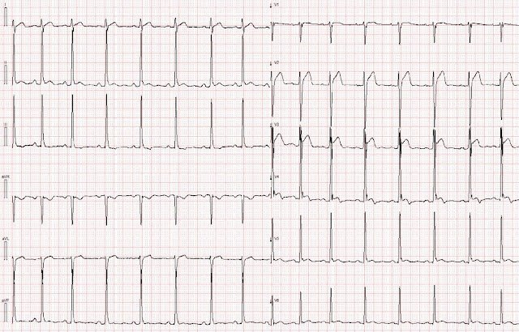
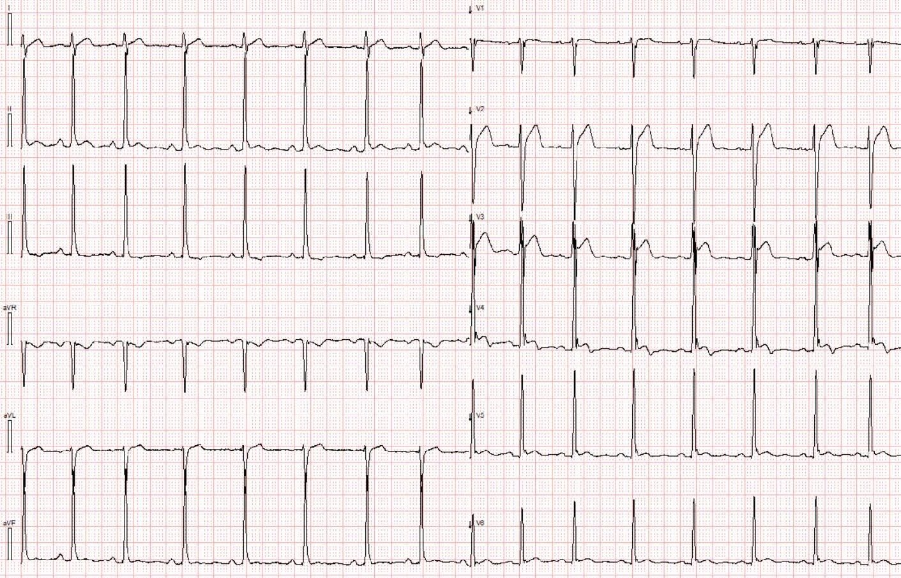
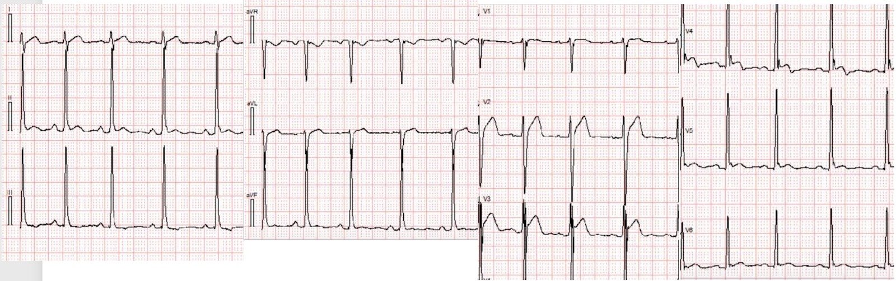
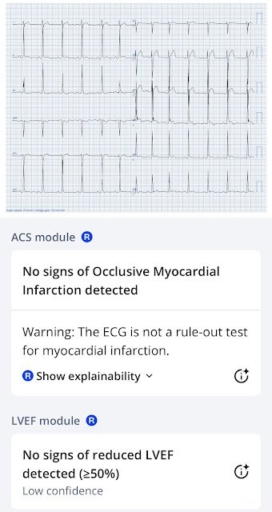
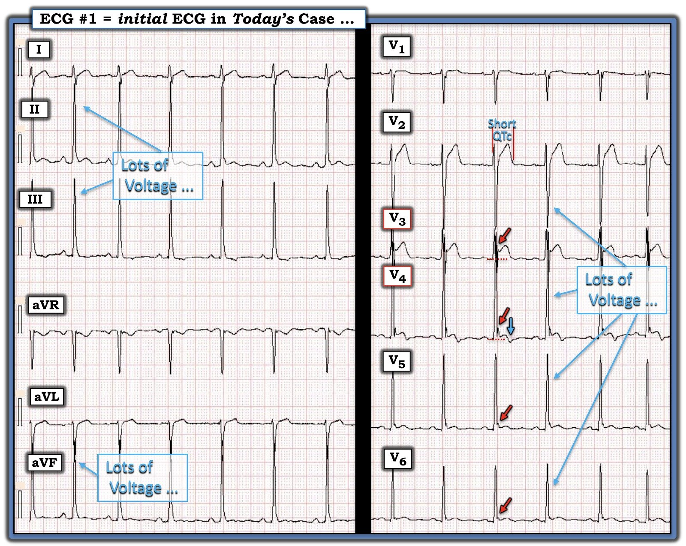

15/05/2025 — Một nam thanh niên với điện tâm đồ “bệnh lý”
Bản dịch tiếng Việt của bài "A young man with a ‘pathologic’ ECG" – Dr. Smith’s ECG Blog. Giữ nguyên toàn bộ 5 hình ảnh của bản gốc.


Tác giả: Magnus Nossen
Bệnh nhân trong ca hôm nay là một nam thanh niên được theo dõi tim mạch định kỳ hằng năm vì có một điện tâm đồ "bệnh lý". Các thăm dò trước đây của anh gồm Holter hằng năm vì hồi hộp đánh trống ngực và siêu âm tim hai năm một lần. Các bản ghi Holter và siêu âm tim đều không có gì đáng chú ý.
Bệnh nhân gọi đội cấp cứu ngoài viện (EMS) vì đau ngực và được ghi điện tâm đồ dưới đây. Anh mô tả cơn đau ngực là đau âm ỉ và chấm mức đau 7/10. Anh không có yếu tố nguy cơ nào của bệnh mạch vành (CAD). Bạn sẽ xử trí bệnh nhân này thế nào?


Bình luận của Smith:
Có thể bạn sẽ thấy định dạng 3 x 4 dễ đọc hơn định dạng 6 x 2. Tôi thấy vậy, nên tôi đã định dạng lại điện tâm đồ (dù làm chưa được khéo lắm).


Bạn nghĩ sao?
Bệnh nhân được nhận để chụp mạch vành cấp cứu vì đau ngực và ST chênh lên. Khi đến nơi, anh trông khỏe nhưng xác nhận vẫn còn khó chịu ở ngực. Điện tâm đồ ghi lại không thay đổi. Chụp mạch vành không phát hiện bất thường bệnh lý nào. Một điện tâm đồ khác ghi sau chụp mạch vành cũng không thay đổi so với bản ghi ban đầu. Troponin T độ nhạy cao sau chụp mạch có kết quả 11ng/L. Troponin lặp lại 4 giờ sau là 16ng/L. (Giá trị tham chiếu < 15ng/L).
Dựa trên điện tâm đồ ban đầu của bệnh nhân, việc anh kể vẫn còn đau ngực và một giá trị troponin T trên giới hạn tham chiếu bình thường — bệnh nhân được chẩn đoán viêm màng ngoài tim cấp. Anh được cho dùng colchicine 3 tháng — và được dặn tránh lao động nặng và tập luyện thể lực.
— Bạn có đồng ý với chẩn đoán và điều trị này không? —
==============================================
Bàn luận: Điện tâm đồ ở Hình 1 không phải là viêm màng ngoài tim. Thay vào đó, điện tâm đồ này cho thấy các dấu hiệu điển hình của tái cực sớm, kèm sóng T đảo ngược lành tính ở chuyển đạo V4. BTWI (sóng T đảo ngược lành tính – Benign T Wave Inversion) thường xuyên được giới thiệu trên Dr. Smith’s ECG Blog. Bệnh nhân có hình ảnh điện tâm đồ này thường là người trẻ, nam giới và gốc Phi (bệnh nhân hôm nay đúng là như vậy). BTWI thường đi kèm khoảng QTc tương đối ngắn — và có một số chuyển đạo cho thấy sóng T đảo ngược, trong đó vài chuyển đạo biểu hiện ST chênh lên (STE) và sóng J rõ rệt. Điện tâm đồ trong BTWI thường cho thấy sóng R biên độ cao ở các chuyển đạo có STE hoặc sóng T đảo ngược (TWI). Xem bài này để thấy nhiều ví dụ về BTWI.
Sau chụp mạch, bệnh nhân được chuyển về bệnh viện khu vực, tại đây MRI tim được chỉ định do nghi ngờ bệnh màng ngoài tim. MRI không được làm ngay, và trong lúc chờ thăm dò hình ảnh này, troponin I độ nhạy cao dưới giới hạn phát hiện x3 lần. Các chỉ dấu viêm và công thức máu (CBC) bình thường. Bệnh nhân phải chờ vài ngày mới được xếp lịch chụp MRI (điều này làm giảm độ tin cậy của kết quả bình thường).
Mặc dù MRI bình thường — chẩn đoán lúc ra viện vẫn là viêm (cơ tim -) màng ngoài tim cấp (!). Tôi ngờ rằng chẩn đoán ra viện đã dựa vào một giá trị troponin T tăng duy nhất và việc đọc sai điện tâm đồ là phù hợp với viêm màng ngoài tim. Troponin T chỉ tăng nhẹ sát ngưỡng trong ca này rất có thể liên quan đến chính thủ thuật chụp mạch chứ không phải do bất kỳ tình trạng bệnh lý nào. Điều quan trọng cần nhớ là chụp mạch vành chẩn đoán có thể làm phóng thích một lượng troponin tối thiểu (1,2)
Tôi chọn trình bày ca này vì nhiều lý do. Ca này minh họa rõ tầm quan trọng của việc nhận ra các hình ảnh điện tâm đồ lành tính. Bệnh nhân này đã trải qua nhiều lần tái khám và xét nghiệm hoàn toàn không cần thiết. Việc theo dõi và các lần thăm khám lặp đi lặp lại có thể ảnh hưởng bất lợi đến tâm lý bệnh nhân.
Với bệnh nhân này, thậm chí còn đã chụp mạch vành. Dù chụp mạch vành chẩn đoán nói chung là thủ thuật an toàn, nó không phải là hoàn toàn không có nguy cơ biến chứng. Colchicine ở liều điều trị khá an toàn đối với bệnh nhân có chức năng thận bình thường. Tác dụng phụ tiêu hóa như buồn nôn, nôn và tiêu chảy khá thường gặp. Tuy nhiên, colchicine là thuốc có khoảng điều trị hẹp. Điều này có nghĩa là cần nhớ tới khả năng quá liều hoặc tác dụng độc. Ở nồng độ gây độc, colchicine có thể gây tác dụng phụ nghiêm trọng và có thể dẫn tới ức chế tủy xương, có thể đe dọa tính mạng. Nếu bạn muốn kê một thuốc có tác dụng phụ tiềm tàng như vậy, bạn phải chắc chắn chẩn đoán là đúng.
Đôi khi bác sĩ bị thiên lệch. Chúng ta tập trung vào việc “đưa ra chẩn đoán”. Suốt thời gian học y khoa và đào tạo chuyên môn, chúng ta tập trung nhận diện những tình trạng có tác động xấu đến bệnh suất và tử suất. Chẩn đoán các tình trạng lành tính ít “được tưởng thưởng” hơn. Tôi nghĩ đây là lý do chúng ta không nhớ các dấu hiệu gắn với tình trạng lành tính dễ dàng như các dấu hiệu có ý nghĩa tiên lượng hơn. Chúng ta cần nhớ rằng đôi khi chẩn đoán một tình trạng lành tính như BTWI có thể rất quan trọng, cả về mặt tránh sử dụng nguồn lực không cần thiết lẫn về mặt ngăn bệnh nhân phải trải qua các xét nghiệm chẩn đoán và điều trị có thể gây hại mà họ không cần. Dưới đây là tóm tắt các dấu hiệu điện tâm đồ chính gặp trong BTWI.
.
BTWI: là một biến thể bình thường đi kèm tái cực sớm. K. Wang đã nghiên cứu hình ảnh này. Ông xem xét điện tâm đồ của toàn bộ 11,424 bệnh nhân có ít nhất một điện tâm đồ được ghi trong năm 2007 tại Hennepin County Medical Center (nơi Dr. Smith làm việc) và tách riêng 101 ca sóng T đảo ngược lành tính. 97 ca là người Mỹ gốc Phi (da đen). 3.7% nam giới người Mỹ gốc Phi và 1% nữ giới da đen có dấu hiệu này. 1 trong 5099 bệnh nhân da trắng có dấu hiệu này. Ngoài tỷ lệ 8.8% (9 trong 109) ở nam giới da đen 17-19 tuổi, dấu hiệu này phân bố đều theo các nhóm tuổi.
Dr. Smith đã xem lại 101 điện tâm đồ này và mô tả các đặc điểm then chốt của hình ảnh này:
1. Khoảng QT tương đối ngắn (QTc < 425ms)
2. Các chuyển đạo có sóng T đảo ngược thường có sóng J rất rõ.
3. Sóng T đảo ngược thường ở các chuyển đạo V3-V6 (khác với Wellens, trong đó sóng T đảo ngược ở V2-V4)
4. Sóng T đảo ngược không tiến triển và nói chung ổn định theo thời gian
5. Các chuyển đạo có sóng T đảo ngược (trước tim trái) thường có ST chênh lên ở một mức độ nào đó
6. Các chuyển đạo trước tim phải thường có ST chênh lên điển hình của tái cực sớm kinh điển
7. Đi trước sóng T đảo ngược ở các chuyển đạo V4-V6 là sóng S rất nhỏ
8. Đi trước sóng T đảo ngược ở các chuyển đạo V4-V6 là sóng R biên độ cao
9. II, III và aVF cũng thường có sóng T đảo ngược.
Diễn tiến: Bệnh nhân này được mời quay lại tái khám ngoại trú, tại đây anh được nhấn mạnh rằng điện tâm đồ của anh là một biến thể bình thường. Anh được trấn an rằng kết quả siêu âm tim và Holter của anh hoàn toàn bình thường — và không cần theo dõi thêm. Colchicine được ngừng.
Bệnh nhân này không cần chụp mạch vành. Mô hình AI Queen of Hearts giảm đáng kể số lần kích hoạt phòng thông tim (cath lab) dương tính giả. Mô hình AI không lo ngại về điện tâm đồ trong ca hôm nay. Không có lo ngại thiếu máu cục bộ, và mô hình LVEF dự đoán phân suất tống máu thất trái bình thường.


Những điểm cần học:
- Với người đọc chưa được đào tạo, BTWI có thể giống thiếu máu cục bộ và viêm màng ngoài tim.
- Chẩn đoán được một tình trạng lành tính là rất quan trọng, và dẫn tới xử trí bệnh nhân tốt hơn.
- Troponin độ nhạy cao có thể tăng nhẹ sau chụp mạch vành.
Bình luận của Smith:
Tôi nhớ tới ca này do Pendell viết khi anh còn là sinh viên y khoa năm 2013. Anh đã nhận ra ST chênh lên biến thể bình thường, trong khi không ai khác nhận ra. Họ chẩn đoán viêm màng ngoài tim vì STE và do đó suýt bỏ sót thuyên tắc phổi.
31 Year Old Male with RUQ Pain and a History of Pericarditis. Submitted by a Med Student, with Great Commentary on Bias! (Bệnh nhân nam đau hạ sườn phải và có tiền sử viêm màng ngoài tim. Do một sinh viên y khoa gửi, kèm bình luận rất hay về thiên lệch!)
Có hơn 20 ví dụ về “sóng T đảo ngược lành tính” trong bài này. Thật sự rất đáng để xem nhiều ví dụ:
Understanding this pathognomonic ECG would have greatly benefitted the patient. (Hiểu được điện tâm đồ đặc trưng bệnh này hẳn đã mang lại lợi ích lớn cho bệnh nhân.)
Tài liệu tham khảo:
1) Coronary angiography-related myocardial injury as detected by high-sensitivity cardiac troponin T assay – PubMed (Tổn thương cơ tim liên quan đến chụp mạch vành phát hiện bằng xét nghiệm troponin T tim độ nhạy cao)
2) Subtle myocardial damage associated with diagnostic coronary angiography alone – PubMed (Tổn thương cơ tim kín đáo chỉ liên quan đến chụp mạch vành chẩn đoán)
Mới: Ứng dụng PMcardio for Individuals 3.0 nay đã có mô hình Queen of Hearts mới nhất và khả năng giải thích của AI (bản đồ nhiệt màu xanh)! Tải ngay cho iOS hoặc Android.

===================================
BÌNH LUẬN CỦA TÔI, bởi KEN GRAUER, MD (15/5/2025):
===================================
Ca hôm nay của Dr. Nossen minh họa việc “sửa lại một điều sai”.
- Nam thanh niên có điện tâm đồ là chủ đề của bài hôm nay dường như đang được chuyên khoa tim mạch theo dõi vì “một điện tâm đồ bệnh lý”.
- Chúng ta không biết nhiều chi tiết của ca này — đặc biệt là việc xác định điện tâm đồ nền của bệnh nhân là “bệnh lý” đã được đưa ra như thế nào. Dù vậy — chúng ta có biết rằng các lần siêu âm tim liên tiếp đều không có gì đáng chú ý, và theo dõi Holter không phát hiện rối loạn nhịp đáng kể nào.
- Theo những gì chúng ta biết được — bệnh nhân này ngoài ra khỏe mạnh (không tăng huyết áp hay bệnh lý nội khoa nào khác). Và giờ chúng ta được giới thiệu ca hôm nay — khi được kể về cơn CP (đau ngực – Chest Pain) mới của bệnh nhân, được chấm mức độ 7/10 và đủ khiến bệnh nhân lo lắng đến mức gọi EMS.
Chúng ta được yêu cầu đánh giá điện tâm đồ ban đầu của bệnh nhân này — mà tôi đã sao lại và đánh dấu trong Hình 3. Không có điện tâm đồ cũ để so sánh.
- Trong phần bàn luận, Dr. Nossen nêu bật lý do vì sao, dù bệnh nhân này được chỉ định phác đồ khám tim mạch hằng năm với các xét nghiệm lặp lại — điện tâm đồ của anh trông lành tính! Tôi tập trung bình luận vào việc làm nổi bật các dấu hiệu điện tâm đồ mà Dr. Nossen đã nêu ở trên là đặc trưng của BTWI (sóng T đảo ngược lành tính – Benign T Wave Inversion), dựa trên tổng quan của Dr. Smith trong bài ngày 22 tháng Ba năm 2022.
Mục đích bình luận của tôi — là việc nhận ra điện tâm đồ của bệnh nhân này gần như chắc chắn lành tính có thể (và nên) được thực hiện trong vòng vài giây!
- Như thấy ở Hình 3 — Nhịp là nhịp xoang (có lẽ kèm chút loạn nhịp xoang). Khoảng QTc tương đối ngắn (dưới 400 msec.).
- Biên độ QRS tăng lan tỏa.
- Chuyển đạo V3 và V4 đặc biệt “lọt vào mắt tôi”. Các mũi tên ĐỎ làm nổi bật khía điểm J rõ ở 2 chuyển đạo này, nơi biểu hiện ST chênh lên dốc lên (tức là hình dạng “mặt cười”) — với sóng T đảo ngược (mũi tên XANH) ở chuyển đạo V4, một chuyển đạo bên trái cũng biểu hiện ST chênh lên. Chính hình dạng của phức bộ QRST ở 2 chuyển đạo này — cùng với điện thế tăng rõ rệt ở rất nhiều chuyển đạo trên bản ghi này — là điều “nổi bật lên” cho thấy trông lành tính.
- Khía điểm J kín đáo hơn cũng thấy ở các chuyển đạo khác (mũi tên ĐỎ ở các chuyển đạo V5,V6).
LƯU Ý: Dù tôi lập tức nhận ra điện tâm đồ ở Hình 1 gần như chắc chắn là hình ảnh BTWI lành tính — bệnh nhân này đã xuất hiện cơn CP mới đủ nặng để khiến anh gọi EMS. Với bối cảnh lâm sàng này — những bệnh nhân như vậy có thể cần được đánh giá đầy đủ ở khoa cấp cứu (ED) (tức là ít nhất 2 lần troponin huyết thanh, ít nhất 2 điện tâm đồ liên tiếp, theo dõi sát) — cho đến khi đạt được mức độ yên tâm cao hơn trong việc loại trừ một biến cố tim cấp. (Không nhất thiết phải thông tim ở mọi ca như vậy).
- T.B. (P.S.): Nếu đây là bệnh nhân của tôi — tôi sẽ làm một bản sao thu nhỏ điện tâm đồ nền của anh để anh mang trong ví, để nếu sau này anh lại đến cấp cứu — một điện tâm đồ nền sẽ sẵn có để so sánh.


Ừm